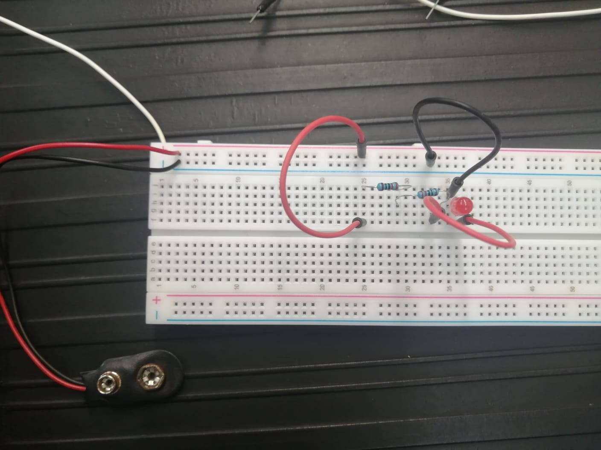
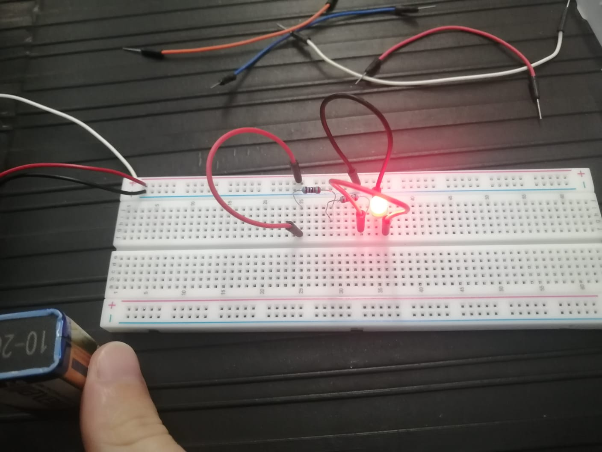
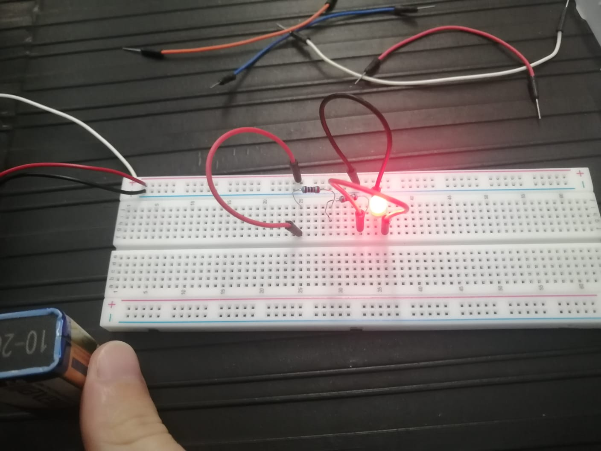
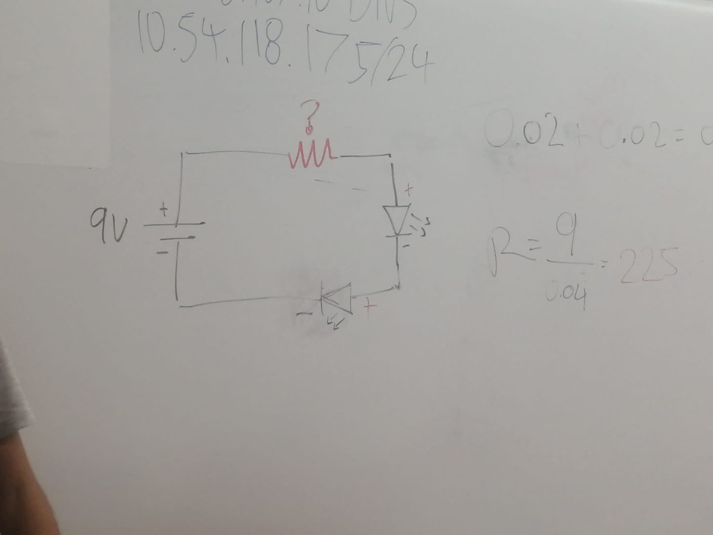
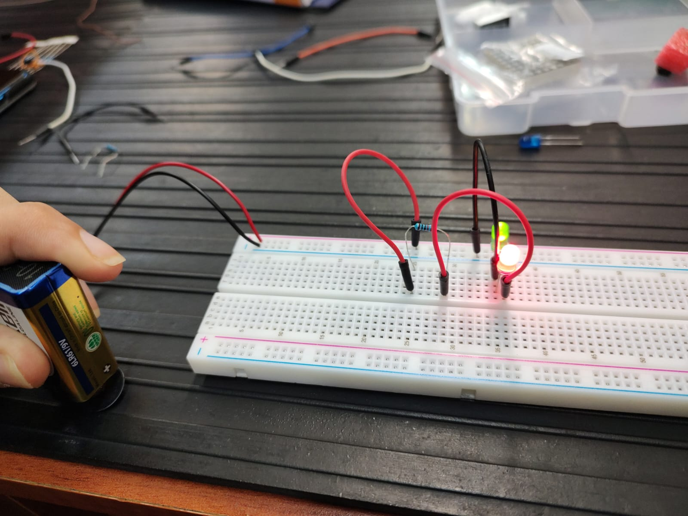
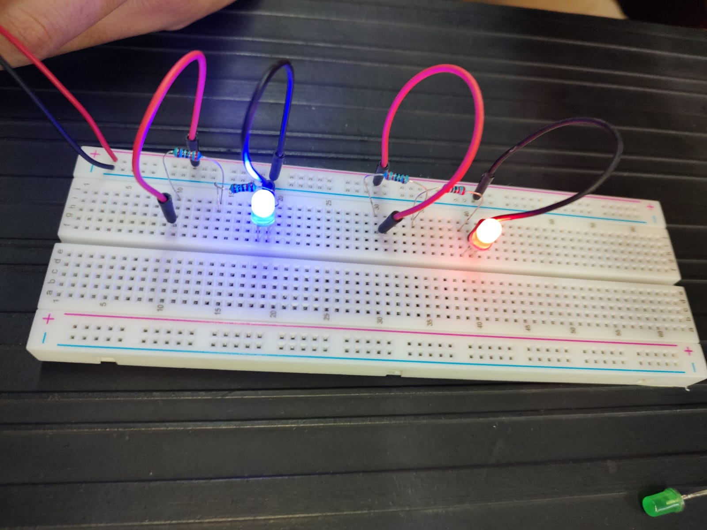
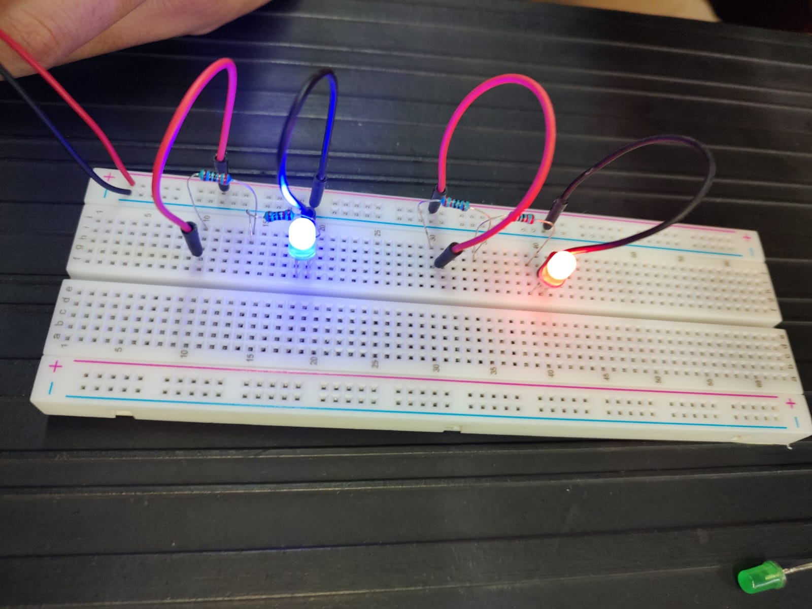
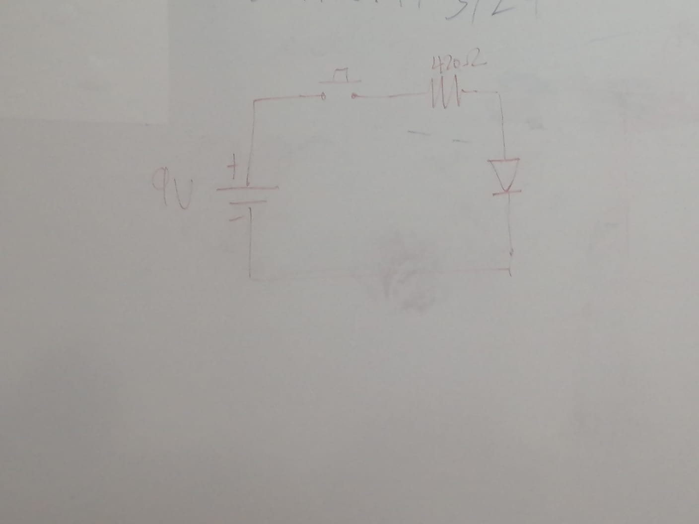

En esta clase recopilamos información sobre los tipos de circuitos y como se construyen tanto en forma fisica como en su forma gráfica.
Circuito SimpleEn esta imagen se puede apreciar el circuito en diagrama

A continuación la representación gráfica:
-

 

En las imagenes anteriores se puede apreciar como se construye el circuito para que actue de manera correcta
Circuito en serieDiagrama del circuito
En la siguiente imagen se observa la construcción del circuito en funcionamiento.
 Circuito paraleloEn las siguientes imagenes se puede apreciar el funcionamiento del circuito paralelo construido
 
Circuito con pulsadores

Circuito con pulsadores
Diagrama del circuito
Para ejemplificar el circuito se adjunta un video de su funcionamiento.
This is the second item's accordion body. It is hidden by default, until the collapse plugin adds the appropriate classes that we use to style each element. These classes control the overall appearance, as well as the showing and hiding via CSS transitions. You can modify any of this with custom CSS or overriding our default variables. It's also worth noting that just about any HTML can go within the
.accordion-body, though the transition does limit overflow.
This is the third item's accordion body. It is hidden by default, until the collapse plugin adds the appropriate classes that we use to style each element. These classes control the overall appearance, as well as the showing and hiding via CSS transitions. You can modify any of this with custom CSS or overriding our default variables. It's also worth noting that just about any HTML can go within the
.accordion-body, though the transition does limit overflow.
This is the second item's accordion body. It is hidden by default, until the collapse plugin adds the appropriate classes that we use to style each element. These classes control the overall appearance, as well as the showing and hiding via CSS transitions. You can modify any of this with custom CSS or overriding our default variables. It's also worth noting that just about any HTML can go within the
.accordion-body, though the transition does limit overflow.